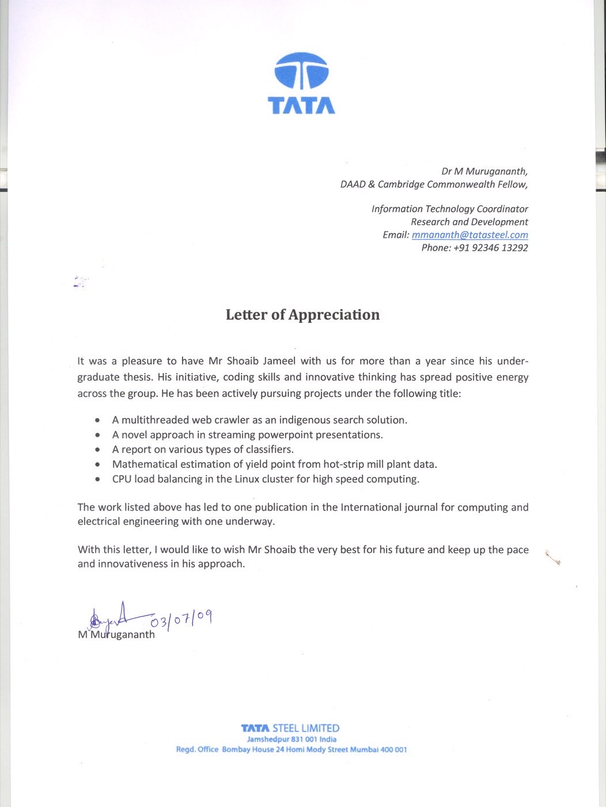
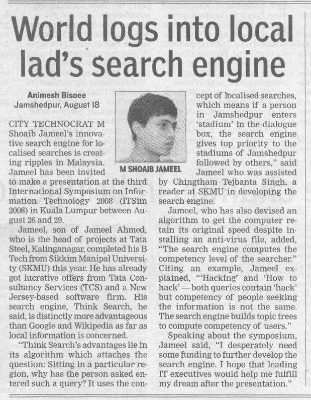

Where It Started.
Years before Hong Kong, Kent or Southampton, there was a B.Tech thesis at Sikkim Manipal Institute of Technology and a research placement in the R&D division of Tata Steel, Jamshedpur. This page is the primary-source record of that period — a signed letter of appreciation, a Hindustan Times clipping, and a peer-reviewed journal paper, exactly as they happened.
A Year-Plus Research Placement, Not a Summer Internship.
Dr. M Murugananth — DAAD & Cambridge Commonwealth Fellow, and IT Coordinator for Research & Development at Tata Steel — signed a letter of appreciation on 3 July 2009 for "more than a year" of work done alongside the undergraduate thesis. It lists five separate projects carried out in that time:
- A multithreaded web crawler as an indigenous search solution — the engine behind the localised search project covered in the press below.
- A novel approach to streaming PowerPoint presentations.
- A report on various types of classifiers.
- Mathematical estimation of yield point from hot-strip mill plant data.
- CPU load balancing in the Linux cluster for high-speed computing — the subject of the published paper below.

The original letter, in full — click to zoom.
The Full Thesis, Cover to Cover.
"Deploying Tata Steel's R&D Algorithms at Corus" — 89 pages, submitted in partial fulfilment of the B.Tech in Computer Engineering at Sikkim Manipal Institute of Technology. Supervised day-to-day by Fredi B. Zarolia, Senior Manager (IT New Initiatives) at Tata Steel, and countersigned by Dr. (Prof.) M. K. Ghose, Head of the Department of Computer Science and Engineering at SMIT.
The brief: Tata Steel had just acquired the Anglo-Dutch steelmaker Corus for $13 billion, and both companies had proprietary R&D algorithms neither side could read — undocumented, non-portable, and locked to whichever compiler had built them. The thesis is split into three modules working toward sharing that logic as generic services: an Apache web server setup, the Linux Adapter bridging Windows-hosted web services to the Linux side, and the CPU load-balancing cluster that later became the peer-reviewed paper above.
The Web Services module — Apache configuration, versioning, the whole setup — was pulled out into its own slide deck and presented throughout the company to demonstrate the impact of the work.
"World Logs Into Local Lad's Search Engine."

Reporter Animesh Bisoee's story, filed from Jamshedpur for the Hindustan Times, covered Think Search — a localised search engine built for the final-year thesis with Chingtham Tejbanta Singh, a reader at Sikkim Manipal Institute of Technology.
Two ideas, both unusual for 2008. Localise the ranking: search “stadium” from Jamshedpur and Jamshedpur’s stadiums come first. Score the searcher: tell a security researcher’s query for “hack” apart from an attacker’s, purely from the surrounding topic tree.
The work earned an invitation to present at the third International Symposium on Information Technology (ITSim 2008) in Kuala Lumpur, 26–29 August 2008 — alongside job offers already in hand from Tata Consultancy Services and a New Jersey-based software firm.
The Publication the Letter Points To.
"Deploying CPU Load Balancing in the Linux Cluster Using Non-Repetitive CPU Selection"
M. Shoaib Jameel, M. Murugananth, Tejbanta Singh Chingtham · IJCEE, Vol. 1, No. 2, pp. 228–235 · manuscript received 13 Sept 2008, published June 2009
Designed and coded from scratch in C for a five-node GNU/Linux cluster at Tata Steel handling CPU-intensive modelling jobs — no MOSIX, PVM or LSF, all socket programming. One node runs as Master Server, polling every node's CPU load over sockets every 30 seconds; another runs as Load Balancer, routing each incoming task to the least-loaded node.
Its most cited-by-itself contribution: rather than lock the shared central database file while it updates — which would stall the load balancer under heavier cluster sizes — the design routes reads and writes through two separate sockets instead, avoiding file locking entirely. A second contribution, non-repetitive CPU selection, stops every request piling onto whichever single node looked least busy at the last 30-second update, by projecting each candidate node's CPU usage forward before assigning the next task.
Every task is sent to whichever node looked idlest 30 seconds ago — so they all pile onto the same one, and it saturates while three sit idle.
Every Primary Source, Uploaded.
No summaries you have to take on faith — the original letter, clipping and paper, exactly as issued.